Tectónica de placas
1. INTRODUCCIÓN
Tectónica de placas, teoría de tectónica global (deformaciones estructurales geológicas) que ha servido de paradigma en la geología moderna, para la comprensión de la estructura, historia y dinámica de la corteza de la Tierra. La teoría se basa en la observación de que la corteza terrestre sólida está dividida en unas veinte placas semirrígidas. Las fronteras entre estas placas son zonas con actividad tectónica donde tienden a producirse sismos y erupciones volcánicas.
2. ORIGEN
Aunque la revolución de la tectónica de placas en el pensamiento geológico ha ocurrido hace poco (en las décadas de 1960 y de 1970), las raíces de la teoría fueron establecidas por observaciones y deducciones anteriores. En uno de estos descubrimientos, James Hall, geólogo neoyorquino, observó que los sedimentos acumulados en cordilleras montañosas son al menos diez veces más gruesos que los del interior continental de la Tierra. Este hecho estableció las bases de la teoría geosinclinal posterior que afirma que la corteza continental crece por acumulaciones progresivas originadas como geosinclinales antiguos y plegados, endurecidos y consolidados en placas. Esta teoría quedó bien establecida en el siglo XX. Otro descubrimiento del siglo XIX fue la existencia de una dorsal en medio del océano Atlántico; hacia la década de 1920, los científicos llegaron a la conclusión que esta dorsal se extendía dando casi una vuelta completa a la Tierra.
En el periodo entre 1908 y 1912, las teorías de la deriva continental fueron propuestas por el geólogo y meteorólogo alemán Alfred Wegener y otros, que descubrieron que las placas continentales se rompen, se separan y chocan unas con otras. Estas colisiones deforman los sedimentos geosinclinales creando las cordilleras de montañas futuras. Los trabajos geofísicos sobre la densidad de la Tierra y las observaciones de los petrólogos habían mostrado con anterioridad que la corteza terrestre se compone de dos materiales bien distintos: el sima, formado por silicio y magnesio, por lo general basáltica y característica de la corteza oceánica; y el sial, de silicio y aluminio, por lo general granítica y característica de la corteza continental. Wegener creía que las placas continentales siálicas se deslizaban sobre la corteza oceánica simática como hacen los icebergs en el océano. Este razonamiento era falaz, porque la temperatura de fusión del sima es mayor que la del sial. Después los geólogos descubrieron la llamada astenosfera, capa semisólida, situada en el manto terrestre debajo de la corteza, a profundidades entre 50 y 150 km. Primero se conjeturó y luego se demostró sísmicamente que era un material plástico que podía fluir despacio.
Uno de los argumentos más fuertes de Wegener para justificar la deriva continental era que los bordes de los continentes tenían formas que encajaban. Para defender su teoría, indicó que las formaciones rocosas de ambos lados del océano Atlántico -en Brasil y en África occidental- coinciden en edad, tipo y estructura. Además, con frecuencia contienen fósiles de criaturas terrestres que no podrían haber nadado de un continente al otro. Estos argumentos paleontológicos estaban entre los más convincentes para muchos especialistas, pero no impresionaban a otros (en su mayor parte geofísicos).
Los mejores ejemplos dados por Wegener de las fronteras continentales hendidas, como se ha mencionado, estaban en ambos lados del océano Atlántico. De hecho, Sir Edward Bullard probó el encaje preciso mediante una computadora y presentó sus resultados a la Sociedad Real de Londres: el ajuste era perfecto. El error medio de estos límites es menor de un grado. Sin embargo, a lo largo de otras márgenes oceánicas, no se encuentra una complementariedad similar: por ejemplo, en el cinturón que circunvala el Pacífico o en el sector de Myanmar (Birmania) e Indonesia del océano Índico. Estos puntos de discrepancia subrayan una característica de los bordes continentales señalada por el famoso geólogo vienés Eduard Suess, hacia 1880. Reconoció un 'tipo atlántico' de margen, identificado por el truncado abrupto de antiguas cadenas montañosas y por estructuras hendidas, y un 'tipo pacífico', marcado por montañas dispuestas en cordilleras paralelas, por líneas de volcanes y por terremotos frecuentes. Para muchos geólogos, las costas de tipo pacífico parecen estar localizadas donde los geosinclinales se deforman y se elevan para formar montañas.
3. EXPANSIÓN DE FONDO MARINO
En la década de 1920, el estudio de los lechos marinos progresó cuando el sonar, dispositivo de sondeo con eco, fue modificado para medir las profundidades oceánicas. Con un sonar se podía medir la topografía submarina y establecer su cartografía. Más tarde, los geofísicos adaptaron los magnetómetros aéreos para poder medir variaciones de intensidad y orientación geomagnética. Las travesías de los magnetómetros transportados en barcos por las dorsales oceánicas mostraron que las rocas de un lado de la dorsal producían un motivo reflejado del de las rocas del otro lado. Los métodos de datación aplicados a las rocas corticales basálticas del lecho marino mostraron que la materia más cercana a la dorsal era mucho más joven que la lejana (de hecho, era relativamente reciente). Además, no se encontraron capas de sedimentos marinos en la cumbre de la dorsal, pero aparecían a cada lado, otras más antiguas y gruesas a mayor distancia. Estas observaciones, añadidas a las del gran flujo de calor, hicieron pensar que la dorsal es el lugar donde se crea la corteza oceánica nueva; el material llega por corrientes de convección de lava caliente, pero se enfría y solidifica con rapidez al contacto con el agua fría del fondo oceánico. Para dejar sitio a esta suma continua de nueva corteza, las placas deben separarse lenta pero de forma constante. En el Atlántico norte, la velocidad de separación es de sólo 1 cm al año, mientras que en el Pacífico es de más de 4 cm al año. Estos movimientos relativamente lentos, impulsados por corrientes de convección térmicas originadas en las profundidades del manto terrestre, son los que han generado, en el curso de millones de años, el fenómeno de la llamada deriva continental.
En la década de 1960, los datos detallados del suelo oceánico fueron agrupados e incorporados en mapas fisiográficos donde el relieve submarino fue representado por científicos del Observatorio Geológico Lamont en la Universidad de Columbia. Se dieron cuenta de que la cresta de las dorsales oceánicas tiene la forma de una rendija, o grieta, de unos pocos kilómetros de ancho, situada en el centro de la dorsal. También descubrieron que en el mar Rojo la dorsal penetra en el continente africano para convertirse en el famoso valle del Rift, que llega desde el valle del Jordán y el mar Muerto, pasando por el mar Rojo, a Etiopía y al este de África. Resulta evidente que la dorsal marca una división en la corteza terrestre como lo hace en la oceánica.
Los nuevos mapas fisiográficos del fondo del océano también revelan, por primera vez, que las crestas de las dorsales tienen muchas grietas, llamadas zonas de fractura. Estas grietas señalan la dirección de las fallas de transformación (lo que se llama 'deslizamiento según el rumbo') que se han desarrollado para compensar las tensiones generadas por velocidades distintas de expansión del suelo marino. Aunque la mayoría de estas fallas están ocultas bajo el océano, una de ellas, la falla de San Andrés conocida por su propensión a los terremotos, emerge del océano Pacífico, cerca de San Francisco, en California y atraviesa cientos de kilómetros de tierra.
4. ARCOS VOLCÁNICOS Y SUBDUCCIÓN
Ya en la década de 1930, sismólogos estadounidenses descubrieron problemas dinámicos particulares de las costas de tipo pacífico. Mostraron que hay terremotos asociados a estas zonas en puntos de baja profundidad en el lado exterior (u oceánico) de los arcos de islas volcánicas, pero que la profundidad de las sacudidas crece hasta alcanzar un máximo de 700 km a una distancia de 700 km hacia tierra desde el frente del arco. Analizando con detalle un caso particular, el geólogo estadounidense Hugo Benioff concluyó que esta geometría representa un plano de falla que se extiende a través de la corteza hasta el manto superior, inclinado hacia abajo con un ángulo de unos 45°. En 1906, se propuso la existencia de una estructura similar, la parte sur de los Alpes penetrando bajo su parte norte. En la década de 1950 se llamó a este proceso subducción.
Se ha probado la existencia de planos de subducción similares a lo largo de casi todas las costas de tipo pacífico (donde no se han encontrado hay pruebas geológicas que muestran que antes había, pero que ahora están inactivas). Muchas de estas zonas revelan un sistema de fallas mayor que corre paralelo al sistema montañoso general. A lo largo de intervalos muy prolongados, el movimiento de una falla pasa de gradual a abrupto y se puede producir un desplazamiento de entre 1 y 5 m en un único terremoto. Fallas así se han encontrado en Chile, Alaska, Japón, Taiwan, Filipinas, Nueva Zelanda y Sumatra.
Durante la subducción, la corteza oceánica penetra en el manto y se funde. Al reciclarse de forma continua, no hay zonas de la corteza moderna de los océanos que tengan más de 200 millones de años de antigüedad. Los bloques corticales se mueven y chocan constantemente cuando son transportados por las distintas placas.
Una consecuencia importante de la fusión de la corteza oceánica subducida es la producción de magma nuevo. Cuando la corteza se funde, el magma que se forma asciende desde el plano de subducción, en el interior del manto, para hacer erupción en la superficie terrestre. Las erupciones de magma fundido por subducción han creado cadenas largas y arqueadas de islas volcánicas, como Japón, Filipinas y las Aleutianas. Allí donde una placa tectónica oceánica es subducida bajo corteza continental, el magma producido hace erupción en los volcanes situados a lo largo de cadenas montañosas lineales, conocidas como cordilleras, hasta una distancia de unos 100 km tierra adentro desde la zona de subducción (esta zona se sitúa a lo largo de una zanja submarina situada a cierta distancia del continente). Además de crear y alimentar volcanes continentales, la fusión de la corteza oceánica subducida es responsable de la formación de algunos tipos de yacimientos de minerales metálicos valiosos.
5. TEORÍA INTEGRADA DE LA TECTÓNICA DE PLACAS
Con todos estos conocimientos sobre la expansión del fondo marino y sobre las zonas de subducción, lo que quedaba era combinarlos en un sistema integrado de geodinámica. En la década de 1950, el geofísico canadiense J. Tuzo Wilson demostró la continuidad global de las zonas de subducción, bastante parecida a los pespuntes de una pelota de fútbol. El geólogo estadounidense Harry Hammond Hess señaló que, si el fondo oceánico se separaba en un lado del globo, debía producirse subducción en el otro; si no, el tamaño de la Tierra aumentaría sin parar. Xavier LePichon, estudiante francés de sismología en Lamont, estudió la geometría de las placas a partir de datos sísmicos y el geofísico estadounidense Robert Sinclair Dietz tomó las pruebas de Wegener sobre la deriva continental y reconstruyó las posiciones de los continentes y de las placas continentales en fases sucesivas desde la actualidad hasta hace unos 200 millones de años. Desde entonces, la teoría de la tectónica de placas ha sido debatida, probada y extendida; se ha convertido en un nuevo paradigma y en el centro de la controversia de las ciencias geológicas.
Para una descripción de la historia geológica de los movimientos de las placas, véase Geología: La escala de tiempos geológicos y las entradas individuales de las eras y los periodos geológicos.
Laurasia, supercontinente septentrional constituido por Norteamérica y Eurasia —excepto la península Indostánica o subcontinente indio— formado durante el triásico, a principios de la era mesozoica. Era parte del supercontinente Pangea, conjunto de todas las tierras continentales a finales de la era paleozoica, hasta que se separó de Gondwana. Como consecuencia de la separación de ambos supercontinentes, apareció el mar de Tetis, que persistió durante el mesozoico, y del que queda un vestigio, el Mediterráneo.
Laurasia, como atestigua el registro fósil, tuvo un clima tropical, cálido, lo que permitió el desarrollo de los reptiles, especialmente de los dinosaurios. La mayor parte de los fósiles continentales se han encontrado en Norteamérica, puesto que una parte importante de lo que ahora es Europa sufrió el avance de las transgresiones marinas y quedó inundada durante el jurásico superior. La formación del Atlántico Norte separó Norteamérica y Europa durante el cretácico. En este periodo se produjo un cambio climático, lo que condujo a cambios en la flora y la fauna; sin embargo, éstas siguieron siendo similares en Europa y Norteamérica, puesto que su separación no fue total hasta el terciario.
Fragmento de la obra El origen de los continentes y océanos, de Alfred Wegener, que plantea algunas de las teorías sobre su formación, concretamente la teoría de la deriva continental o de los desplazamientos (teoría movilista) que defiende la separación de los continentes en el curso de los tiempos geológicos.
Fragmento de El origen de los continentes y océanos. De Alfred Wegener.
Capítulo 2.
Pero ¿cuál es la verdad? La Tierra no puede tener más de un rostro a la vez.
¿Hubo puentes continentales, o bien estuvieron siempre los continentes separados
por mares profundos? Es imposible rechazar la reivindicación sobre las antiguas
conexiones terrestres si no queremos renunciar por completo a comprender el
desarrollo de la vida en la Tierra. Pero es igualmente imposible rehuir los
argumentos con los que los partidarios de la teoría de la permanencia rechazan
los intercontinentes hundidos. Evidentemente, queda tan sólo una posibilidad:
tiene que existir un error oculto en las suposiciones tomadas como evidentes.
Este es el punto de partida de la teoría movilista o teoría de la deriva. La suposición, tomada como evidente tanto en la teoría de los puentes continentales como en la de la permanencia, de que la situación relativa de los bloques continentales no ha cambiado (prescindiendo de su cobertura de mares someros) debe ser falsa: los continentes deben haberse movido. Suramérica debe haber estado junto a Africa y formado con ella un único continente, escindido en el Cretácico en dos partes que luego, como los fragmentos de un témpano agrietado, se separaron cada vez más en el curso del tiempo geológico, pero los bordes de estos dos bloques concuerdan todavía hoy. No sólo el gran codo en ángulo recto que forma la costa brasileña en el cabo San Roque encuentra su negativo en el recodo de la costa africana en Camerún, sino también al Sur de estos accidentes la forma de la costa es tal que a cada saliente en la costa brasileña corresponde una bahía de igual forma en la africana, y viceversa: a cada bahía en el lado brasileño un saliente en el africano. Como puede comprobarse con el compás sobre un globo terrestre, las distancias concuerdan con precisión.
Igualmente, Norteamérica ha estado situada en el pasado junto a Europa, y formó un bloque único con ella y Groenlandia, al menos desde Terranova e Irlanda hacia el Norte. Este bloque se fragmentó a partir del Terciario Superior (y en el Norte incluso en el Cuaternario) por medio de una fractura que se bifurcaba en Groenlandia, tras lo cual los fragmentos se separaron unos de otros. La Antártida, Australia y la India estaban situadas junto a Suráfrica hasta el comienzo del Jurásico, formando con ella y con Suramérica un gran contienente único (parcialmente cubierto por mares someros), que en el transcurso del Jurásico, el Cretácico y el Terciario se fragmentó en bloques aislados, que luego derivaron en todas direcciones.
En el caso de la India, se trata de un fenómeno algo distinto: inicialmente, un largo bloque cubierto casi totalmente de mares someros la unía por completo al continente asiático. Tras la separación de Australia por una parte (en el Jurásico Inferior) y por otra de Madagascar (en el límite entre Cretácico y Terciario), este largo bloque fue plegado cada vez más por la aproximación de la India a Asia, y constituye hoy una de las más poderosas cadenas de montañas de la Tierra: el Himalaya y las cadenas vecinas.
También en otras zonas se presenta la deriva continental en relación causal con el origen de las montañas: en la migración hacia el Oeste de las dos Américas, su borde anterior se plegó en la gigantesca cadena andina (que se extiende desde Alaska hasta la Antártida) a causa de la resistencia frontal del fondo de la cuenca del Pacifico, muy antigua, fría y, por tanto, rígida. También junto al continente australiano, sólo separado de Nueva Guinea por un mar de plataforma, se encuentran las elevadas montañas de Nueva Guinea, formadas recientemente y también en el borde anterior en el sentido del movimiento; antes de su separación con respecto a la Antártida, la dirección de su movimiento era distinta: la actual costa Este era entonces el borde anterior. Entonces se plegaron las montañas de Nueva Zelanda, que se extendían inmediatamente delante de esta costa, y a continuación y debido a los cambios en la dirección de la deriva, se desligaron y retrasaron, formando arcos de islas. Las actuales cordilleras del Este de Australia surgieron en una época anterior; se formaron al mismo tiempo que los pliegues más antiguos en Norte y Suramérica, los que constituyen la base de los Andes (Precordillera), en el borde anterior de la masa continental que migraba como un todo antes de la fragmentación.
El citado proceso de la separación de Nueva Zelanda (primero cadena marginal, luego arco de islas) del continente australiano nos lleva a considerar el fenómeno al otro lado de los continentes en movimiento, donde los fragmentos quedarían retrasados en la migración de los grandes bloques, sobre todo cuando ésta tenía lugar hacia el Oeste. Así, las cadenas marginales se segregan en el borde oriental del continente asiático para formar arcos insulares; así quedan atrás las Pequeñas y Grandes Antillas con respecto al bloque centroamericano, lo mismo que el llamado arco de las Antillas del Sur, entre la Tierra de Fuego y la Antártida occidental; incluso todos los continentes que se estrechan en dirección meridional presentan una curvatura hacia el Este del extremo aguzado, debido a un retraso relativo en la deriva. Como ejemplos, citaremos el extremo Sur de Groenlandia, la plataforma submarina de Florida, la Tierra de Fuego, la Tierra de Graham o la fragmentada Ceilán.
Se puede observar sin dificultad que esta exposición global de la teoría de los desplazamientos se basa en la suposición de que los fondos marinos y los continentes están compuestos de distintos materiales, que en cierta medida representan diferentes niveles de la Tierra. El más extremo, representado en los continentes, no cubre toda la superficie terrestre (como veremos, quizá sea más correcto decir que no la cubre ya), y los fondos marinos representan la superficie libre del siguiente nivel de la Tierra, que asimismo se supone que existe bajo los continentes. Este es el aspecto geofísico de la teoría movilista.
Si tomamos la teoría de la deriva como base, podemos satisfacer todos los requisitos legítimos, tanto de la teoría de los puentes continentales como de la teoría de la permanencia. En concreto, esto quiere decir que hubo conexiones entre los continentes actualmente separados, pero no intercontinentes que luego se hundieron; y que hay permanencia, pero no de cada océano o continente individual, sino del área de los continentes y del área de las cuencas marinas en su conjunto.
La argumentación detallada de esta nueva teoría constituirá el contenido principal de este libFuente: Wegener, Alfred. El origen de los continentes y océanos. Madrid. Ediciones Pirámide, 1983.
1. INTRODUCCIÓN Deriva continental, movimiento que experimentan los continentes sobre la superficie terrestre
En 1620, el filósofo y estadista inglés Francis Bacon se fijó en la notable similitud que presentaban las formas de la costa occidental de África y oriental de Sudamérica, aunque nunca sugirió que los dos continentes hubiesen estado unidos en otro momento. La propuesta de que los continentes podrían moverse la hizo por primera vez en 1858 Antonio Snider, un estadounidense que vivía en París, aunque fue el meteorólogo alemán Alfred Wegener quien la desarrolló detalladamente en el libro El origen de los continentes y océanos, publicado en 1915. Por tanto, suele considerarse a Wegener autor de la teoría de la deriva continental
. 2. LA TEORÍA DE WEGENER
Lo que Wegener quería demostrar era que todos los continentes de la Tierra habían estado unidos en algún momento en un único 'supercontinente' al que llamó Pangea; que Pangea se había escindido en fragmentos en algún momento del pasado; y que estos grandes fragmentos -los actuales continentes- fueran alejándose poco a poco de sus posiciones de partida hasta alcanzar las que ahora ocupan. La mayor parte de los geólogos de la época, y del medio siglo siguiente, rechazaron esta idea. Hasta entonces, siempre se había supuesto que los continentes ocupaban posiciones fijas, y resultaba inaceptable pensar que esa hipótesis fuese errónea. Además, argumentaban los geólogos, ¿cómo podían las masas de tierra continentales moverse sobre el fondo oceánico? No había en la Tierra ninguna fuerza capaz de semejante cosa
3. PRUEBAS DE LA TEORÍA
Pero a mediados de la década
de 1960, los científicos que no aceptaban la teoría de Wegener formaban una
minoría muy reducida. Lo que volvió aceptable esta idea fue en gran medida el
fenómeno llamado paleomagnetismo. Muchas rocas adquieren en el momento de formarse
una carga magnética cuya orientación coincide con la que tenía el campo magnético
terrestre en el momento de su formación. A finales de la década de 1950 se logró
medir este magnetismo antiguo y muy débil (paleomagnetismo) con instrumentos
muy sensibles; el análisis de estas mediciones permitió determinar dónde se
encontraban los continentes cuando se formaron las rocas. Se demostró así que
todos habían estado unido en algún momento.
Poco después de esta prueba se obtuvieron otras. Los paleontólogos llevaban
mucho tiempo desconcertados por el hecho de que algunas especies botánicas y
animales se encontraban en varios continentes. Era impensable que estas especies
hubiesen logrado ir de un continente a otro salvando los océanos, pero sí podían
haberse dispersado fácilmente en el momento en que todas las tierras estaban
unidas. Algunos geólogos se han preguntado también por qué en el oeste de África
y el este de Sudamérica se encontraban ciertas formaciones rocosas del mismo
tipo y edad. Pero si los continentes estuvieron unidos alguna vez en Pangea,
es fácil entender que tales formaciones no eran entonces sino una sola, que
se escindió cuando las masas terrestres se separaron. Pangea empezó a fragmentarse
hace unos 200 millones de años, primero en dos supercontinentes menores -Gondwana
al sur (que comprendía lo que ahora es Sudamérica, África, Australia, la Antártida
y la India) y Laurasia al norte (Norteamérica, Europa y la mayor parte de Asia)-
y a continuación en los actuales continentes, que empezaron a separarse. Este
episodio de la deriva continental recibe a veces el nombre de 'deriva de Wegener',
por el autor de la teoría.
Ahora se sabe que
hubo además periodos de deriva anteriores. Pangea sólo había durado unos pocos
cientos de millones de años y se había formado inicialmente a partir de la unión
de un conjunto de masas de tierra distintas de los continentes actuales. Tales
masas eran a su vez fragmentos de otro supercontinente, que también se había
formado a partir de la unión, ocurrida varios centenares de millones de años
antes, de otras masas terrestres más antiguas. Evidentemente, la rotura, dispersión
y reunión de supercontinentes es un proceso continuo.¿Pero cómo se abren camino
los continentes sobre el fondo oceánico sólido? A mediados de la década de 1960
ya se había demostrado que esto no constituía ningún problema, pues era el propio
fondo oceánico el que se movía y arrastraba de este modo los continentes (véase
Tectónica de placas).El proceso continúa, y los continentes siguen su deriva,
por lo general a razón de unos pocos centímetros al año. Por tanto, su actual
disposición no es permanente. Así, el océano Atlántico se está ensanchando a
medida que África y América se separan; en cambio, el océano Pacífico se está
empequeñeciendo. También el mar Mediterráneo se estrecha (y terminará por desaparecer),
pues África avanza hacia el norte, al encuentro de Europa.
El movimiento del subcontinente indio demuestra otro fenómeno: cuando Pangea
se escindió en Gondwana y Laurasia, la India formaba parte de Gondwana. Pero
más tarde se rompió y se desplazó rápidamente hacia el norte a la velocidad
inusualmente elevada de 17 cm anuales, hasta chocar con Asia e unirse a este
continente. La presión de la India contra Asia provocó el plegamiento de la
corteza y la formación de la cordillera del Himalaya, fenómeno que aún prosigue.
Se cree que la unión o sutura de masas de tierra continuará repitiéndose una
y otra vez en el futuro y que todos los continentes volverán a reunirse de nuevo
en un supercontinente
Pangea, continente único existente a finales del paleozoico, que comenzó
a desgajarse en varias masas continentales a principios del triásico.
Alfred Wegener postuló, a principios del siglo XX, la existencia de este supercontinente
para poder explicar varios fenómenos geológicos y biológicos. Entre ellos están:
la correspondencia entre las costas atlánticas de África y Sudamérica, la semejanza
entre sistemas montañosos paleozoicos de ambos lados del Atlántico y la distribución
de algunos grupos de seres vivos, como los marsupiales. Wegener concluyó que
los continentes actuales, separados, se han desplazado lateralmente a partir
de uno mayor al que denominó Pangea. La opinión de Wegener fue considerada radical
por muchos geólogos de su época. Según el registro fósil, en el carbonífero,
la flora predominante en las zonas que ahora son Eurasia y Norteamérica era
tropical, mientras que la de Gondwana, el supercontinente que comprendía la
mayor parte de lo que ahora son Sudamérica, África, el subcontinente indio y
Australia, era propia de climas fríos. El primer tipo ha dado lugar a los yacimientos
de carbón más importantes. Esta flora tropical se desarrolló en pantanos que
estaban habitados por insectos gigantescos, crustáceos y algunos anfibios. Durante
el pérmico, último periodo de la era paleozoica, en Pangea se produjo la primera
diversificación de los reptiles. Los movimientos continentales continúan en
la actualidad y se sigue produciendo un ciclo que comenzó cuando se formó Pangea.
Sin embargo, este continente es el resultado de un ciclo anterior en el que
otras masas continentales se desplazaron hasta quedar unidas
. Cretácico, en el
ámbito de la geología, último periodo del mesozoico, que comenzó hace unos 145,6
millones de años y finalizó hace unos 65 millones de años. El nombre alude a
la abundancia de estratos de creta depositados durante el final del periodo
en Inglaterra y Francia, hoy expuestos en lugares como Dover. En Europa y Norteamérica,
los geólogos dividen el periodo en cretácico temprano y cretácico tardío.
Al comenzar el mesozoico, todos los continentes estaban unidos en una masa continental
única, Pangea. La división de Pangea durante el mesozoico temprano dio lugar
a dos supercontinentes: Laurasia, formado por lo que hoy son los continentes
del norte, y Gondwana, formado por los del sur. Entre ambos había un enorme
mar, el Tetis, del que el Mediterráneo de nuestros días no es más que un vestigio.
Durante el cretácico, la placa continental africana, al desprenderse de Gondwana
y derivar hacia el norte, sometió a los sedimentos del mar de Tetis a poderosas
fuerzas de compresión, creando las raíces de los Alpes europeos. La placa africana
se hundió bajo la de Laurasia, desencadenando la actividad volcánica que hoy
persiste en la península italiana y Sicilia. Mientras tanto, el recién formado
océano Atlántico se ensanchó debido a la expansión del suelo oceánico a lo largo
de la dorsal Medioatlántica, lo que aumentó la distancia entre África y América
del Sur. Más al este, India se había separado de Gondwana y, en su deriva hacia
el norte, había empezado a plegar los sedimentos del Tetis oriental formando
riscos alargados, predecesores de lo que sería el Himalaya. La Antártida y Australia,
aún unidas, derivaban hacia el sur y el este.
El ininterrumpido movimiento hacia el oeste de Norteamérica generó fuerzas orogénicas
(véase Orogénesis) que dieron lugar a la elevación de las montañas Rocosas,
y lo mismo ocurrió en América del sur, donde comenzó el plegamiento alpino que
dio lugar en la siguiente era a la cordillera de los Andes. La aparición de
las montañas Rocosas bloqueó el drenaje hacia el oeste del pujante mar del cretácico
tardío, convirtiendo buena parte del interior de la zona oeste de Norteamérica
en una gigantesca ciénaga. Al este, los sedimentos producidos por la erosión
de los Apalaches formaron la planicie costera atlántica.
Durante el cretácico tardío, el nivel del mar subió en todo el mundo, inundando
casi un tercio de la superficie terrestre actual. Así, el calor del sol pudo
distribuirse más hacia el norte gracias a las corrientes marinas, dando lugar
a un clima global cálido y suave, sin casquetes de hielo en los polos y una
temperatura en las aguas del Ártico de 14 ºC o más. En un clima así, los reptiles
de sangre fría podían proliferar incluso en latitudes boreales, mientras que
los fósiles de helechos y cicadofitos encontrados en rocas del cretácico a latitudes
árticas son similares a las plantas que crecen en los bosques húmedos subtropicales
de la actualidad. A finales del cretácico, la flora había adoptado ya una apariencia
moderna e incluía muchos de los géneros actuales de árboles, como aquellos a
los que pertenecen el roble, la haya y el arce.
A pesar de la benignidad de las condiciones ambientales, a finales del periodo se produjeron varias extinciones en masa. Desaparecieron cinco grandes grupos de reptiles -dinosaurios, pterosaurios, ictiosaurios, plesiosaurios y mosasaurios- que hasta entonces habían sido dominantes. Una teoría reciente señala que su extinción se debió a la colisión con la Tierra, hace 65 millones de años, de un cometa o de un pequeño asteroide que lanzó el suficiente polvo a la atmósfera como para bloquear parte de la radiación solar incidente y reducir la temperatura en todo el mundo, produciendo efectos devastadores sobre las algas, la vegetación y los pequeños animales de los que dependían los grandes reptiles para alimentarse.
Fosa tectónica o Graben, asociación de fallas que da lugar a una región deprimida entre dos bloques levantados.
Las fosas tectónicas se producen en áreas en las que se agrupan al menos dos fallas normales. Si éstas tienen la misma dirección pero los labios levantados están opuestos, ambas delimitan el mismo bloque hundido, el cual corresponde a la fosa. Pueden producirse series de fallas paralelas, y en este caso la fosa tectónica estará limitada por bloques escalonados. Las fosas pueden ser la primera manifestación de la formación de una dorsal, cuando ésta comienza a afectar a un continente, como ocurre en el valle del Rift africano. Las fosas forman valles que pueden medir decenas de kilómetros de ancho y varios miles de kilómetros de longitud. Los valles se rellenan con sedimentos detríticos que pueden alcanzar cientos de metros de espesor. Así sucede, por ejemplo, en el valle del río Tajo, en la península Ibérica.
HIMALAYA
2. FORMACIÓN GEOLÓGICA Y ESTRUCTURA
Durante el paleozoico y el mesozoico (hace 65-570 millones de años), la actual superficie del Himalaya constituía el fondo del antiguo mar de Tetis, situado al norte de la placa india que formaba parte de la corteza terrestre. Las montañas se formaron por la acción de la tectónica de placas. Así, la placa india se desplazó hacia el norte hasta chocar con la masa continental inmóvil de Asia. La elevación principal tuvo lugar a mediados o finales del periodo terciario (hace 12-65 millones de años). El levantamiento de las cordilleras que forman el sistema del Himalaya comenzó por el norte, y fue avanzando hacia el sur en un proceso de varias fases. Todavía hoy el sistema no ha alcanzado un estado de equilibrio total y son frecuentes los temblores de tierra.
Primordialmente, el Himalaya está formado por rocas metamórficas, pero en el sur hay enormes áreas de rocas ígneas. También se han encontrado en varias regiones sedimentos marinos del paleozoico y del mesozoico.
Jurásico, segunda división del mesozoico en la escala de tiempos geológicos. Abarca desde unos 208 hasta unos 145,6 millones de años atrás. Toma su nombre de los estratos de roca de la cordillera del Jura.
Al principio del jurásico, la Tierra tenía dos supercontinentes -Gondwana en el Sur y Laurasia (Asia, Europa y Norteamérica) en el norte- divididos por el mar de Tetis cuya parte occidental se localizaba en el lugar que ocupa ahora el Mediterráneo. Italia, Grecia, Turquía e Irán seguían ligados a la porción norteafricana de Gondwana -que, según la teoría de la tectónica de placas, había empezado a romperse en el triásico. La Antártida y Australia, ya separadas de Gondwana en el inicio del jurásico, permanecieron unidas, mientras que la India se desplazaba hacia el norte en una trayectoria de colisión con Laurasia, el supercontinente del norte.
Norteamérica, todavía unida a Groenlandia y a Europa occidental en los comienzos del jurásico, empezó a separarse de Laurasia y a derivar hacia el oeste. Esto tuvo dos efectos: primero, en el este se abrió el golfo de México, en cuyas aguas se depositaron gruesos lechos de sal; segundo, en el oeste, a medida que la placa norteaméricana empezaba la subducción de la placa del Pacífico, el inicio del vulcanismo y la intrusión de batolitos (grandes cuerpos subterráneos de roca ígnea granítica) prepararon la formación de los sistemas montañosos que, más tarde, culminarían en la emergencia de la cordillera Norteamericana -las montañas Rocosas y sierra Nevada.
Entre tanto, en el hemisferio sur, Sudamérica y África empezaron a separarse a su vez, creando una vía marina larga y estrecha entre los dos continentes. Con el tiempo, esta vía se unió al gran mar ecuatorial de Tetis. Mientras que estos mares crecían y se unían, zonas de agua marina poco profundas y cálidas se extendieron por gran parte de Europa y de otras masas de tierra que bordeaban el mar de Tetis. Hacia el final del jurásico, estos mares bajos empezaron a vaciarse, dejando depósitos gruesos de caliza en donde se formaron algunas de las más ricas acumulaciones de petróleo y de gas.
Una prueba de que el clima jurásico era cálido y húmedo es la existencia de arrecifes de coral muy difundidos y de bosques templados y subtropicales compuestos en su mayoría por gimnospermas (cicadáceas, ginkgos y coníferas), y helechos con semilla. Las angiospermas (plantas con flor) aparecieron por primera vez a mediados del jurásico.
Hoy sabemos que los reptiles eran la forma de vida animal dominante. Algunos se habían adaptado a la vida marina (los ictiosaurios y los plesiosaurios) y a la aérea (los pterosaurios) tanto como a la terrestre, donde se desarrolló una gran variedad de formas -algunas de ellas alcanzaron tamaños gigantes, como el alosaurio, carnívoro, y el apatosaurio, herbívoro. En 1822, se encontraron los huesos del Iguanodon, uno de los primeros dinosaurios descubiertos, en estratos jurásicos de Sussex. También se hallaron restos del pájaro más antiguo conocido, el Archaeopteryx dentado, en rocas de la edad jurásica. Los mamíferos, aparecidos al final del triásico (periodo anterior), continuaron siendo roedores pequeños durante el tiempo en el que los dinosaurios prosperaban, esto es, durante todo el jurásico.
Eurasia, término con el que se designa al conjunto formado por los territorios que integran Europa y Asia. Fue propuesto por el geógrafo alemán H. Reuschle en 1858 y constituye la más extensa masa continental de la Tierra, pues comprende más de una tercera parte del total de las áreas emergidas del planeta, con una superficie que supera los 50 millones de km2. Establecer una línea divisoria clara que delimite ambos continentes no es tarea fácil, ya que la diferencia entre estos espacios radica no tanto en sus aspectos fisiográficos como en los culturales; además, el territorio ruso se extiende tanto por Europa como por Asia. Sin embargo, por tradición, la cadena montañosa de los Urales, que atraviesa de norte a sur el suelo ruso y una pequeña parte del noroeste de Kazajstán, es considerada la frontera entre los dos continentes, así como la cordillera del Cáucaso, que separa las tierras septentrionales de Georgia, Armenia y Azerbaiyán de las del extremo suroccidental de Rusia.
Mioceno, cuarta división del periodo terciario del cenozoico, que comenzó hace 23,3 millones de años y finalizó hace 5,2 millones de años . La elevación de las grandes cordilleras montañosas que había comenzado como resultado de la colisión entre placas tectónicas durante el oligoceno, siguió adelante (véase Tectónica de placas). Entre estas cordilleras, las principales fueron los Alpes en Europa, el Himalaya en Asia y las cadenas montañosas del continente americano. Los sedimentos producidos por la erosión de estos sistemas se depositaron en cuencas marinas poco profundas, para terminar convirtiéndose en la localización de ricos depósitos petrolíferos en California, Rumania y la costa oeste del mar Caspio.
El clima del mioceno era más fresco que el de la época precedente. En el hemisferio sur se había establecido ya un sistema circumplanetario de corrientes oceánicas, que aislaba a la Antártida de las corrientes más cálidas del resto del mundo. Esto favoreció la aparición de un gran casquete de hielo antártico. En el hemisferio norte, grandes áreas antes cubiertas por espesos bosques se convirtieron en grandes praderas. La fauna del mioceno incluía una serie de mamíferos, entre ellos el rinoceronte, el camello, el gato y el caballo. El mastodonte hizo también su aparición, al igual que el mapache y la comadreja. Durante esta época, losgrandes simios, relacionados con el orangután, vivían en Asia y en la parte sur de Europa; estos simios del mioceno son los parientes más próximos de los simios humanoides que aparecieron en el plioceno.
Paleoceno, en geología, primera y más corta de las cinco divisiones del periodo terciario dentro del cenozoico en la escala de tiempos geológicos; abarca el intervalo transcurrido entre 65 y 56,5 millones de años atrás, y es definida, como las épocas posteriores, según la proporción de especies modernas de moluscos encontradas en los registros fósiles.
El paleoceno marca el paso final en la desmembración del supercontinente ancestral Pangea que empezó a separarse en los comienzos del mesozoico temprano. Los movimientos de la tectónica de placas separaron finalmente la Antártida de Australia; en el hemisferio norte, el fondo marino en expansión del Atlántico norte ensanchado alejó Norteamérica de Groenlandia. Al haber desaparecido los dinosaurios al final del cretácico, el periodo precedente, la vida mamífera empezó a dominar en la Tierra. Los principales mamíferos que aparecieron fueron los marsupiales, los insectívoros, los lemures, los creodontos (ancestro carnívoro común de todos los félidos y los cánidos) y animales ungulados primitivos a partir de los cuales fueron evolucionando diversos grupos (como los caballos, los rinocerontes, los cerdos y los camellos).
|
TECTÓNICA
DE PLACAS
|
|
| 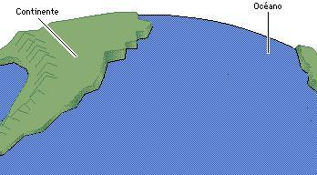 | 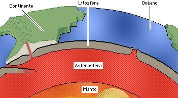 |
|
Las cortezas continental
y oceánica forman parte de
|
Las cortezas continental y oceánica forman parte de la Litosfera o capa exterior de la Tierra. La Litosfera está formada por aproximadamente 12 masas rocosas distintas o placas. Se llama Tectónica de placas al movimiento que experimentan estas placas terrestres. |
| 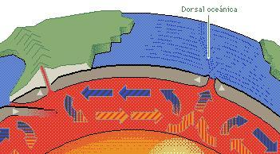 | 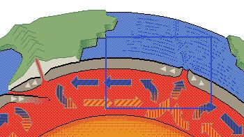 |
|
Bajo la Litosfera
se encuentra la Astenosfera, una capa plástica que fluye muy lentamente
por efecto del calor del manto sobre el que flota. |
Unas regiones dele manto terrestre están más calientes que otras. Por encima de ellas el material de la Astenosfera se expande, se vuelve menos denso que las regiones adyacentes y se eleva. |
| 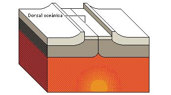 | 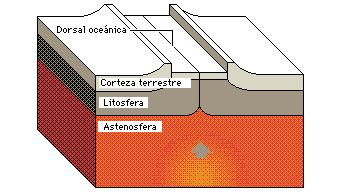 |
| Cuando alcanza la parte superior de la Astenosfera el material se dispersa y las placas de la Litosfera que se apoyan sobre él se separan. | Si el calentamiento
tiene lugar bajo el fondo del océano, la corteza se eleva y conforma las
Dorsales Oceánicas. |
| 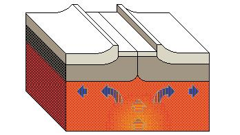 | 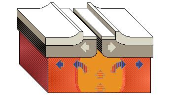 |
| A lo largo de estas formaciones, las placas se separan y se forma continuamente nueva corteza. | El material de la Astenosfera termina por enfriarse y aumenta de densidad. |
| 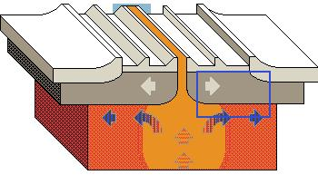 | |
| Lo que provoca un hundimiento que arrastra parte de la Litosfera. | Este fenómeno
se denomina subdudcción. |
| 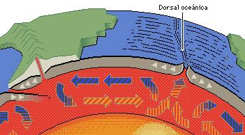 | 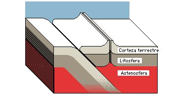 |
| Cuando la corteza oceánica penetra bajo la continental se funde y se transforma en roca líquida o Magma. | |
| 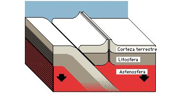 | 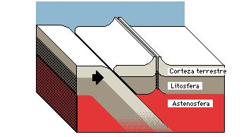 |
| En ocasiones el magma logra abrirse paso hasta la superficie para formar volcanes. | |
| 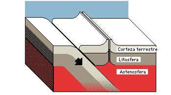 | 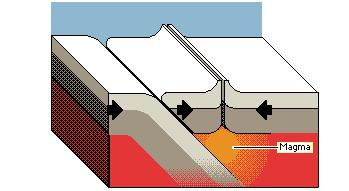 |
| Casi todos los volcanes del mundo se encuentran a lo largo de las líneas en que las placas oceánicas penetran bajo | |
| 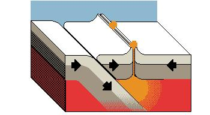 | 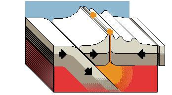 |
| las continentales. | Las placas se desplazan |
| 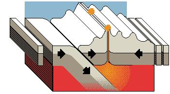 | 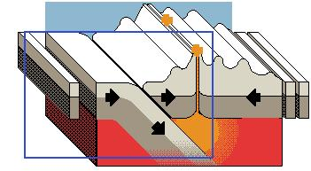 |
| a razón de unos pocos centímetros | al año, pero este ligero movimiento, |
| 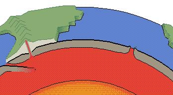 | 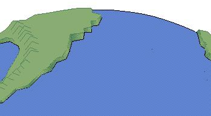 |
| mantenido durante millones de años | basta para transformar la faz de la Tierra |